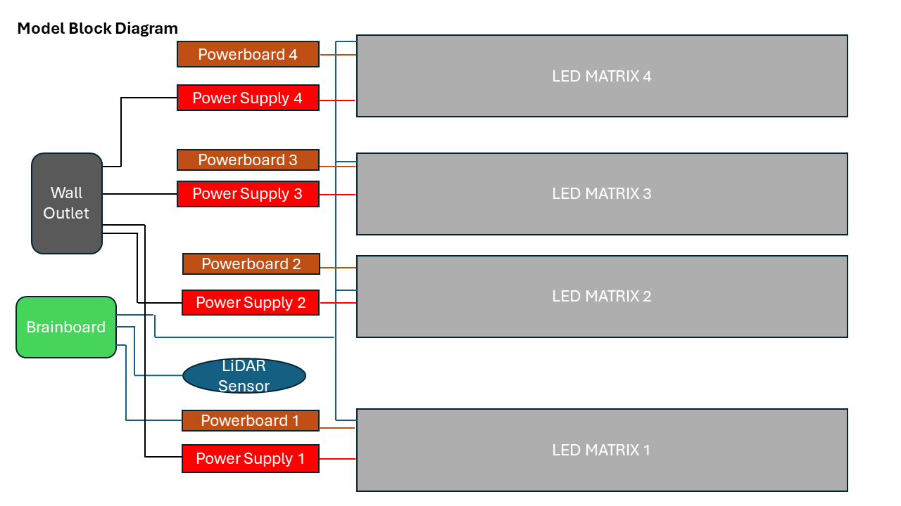
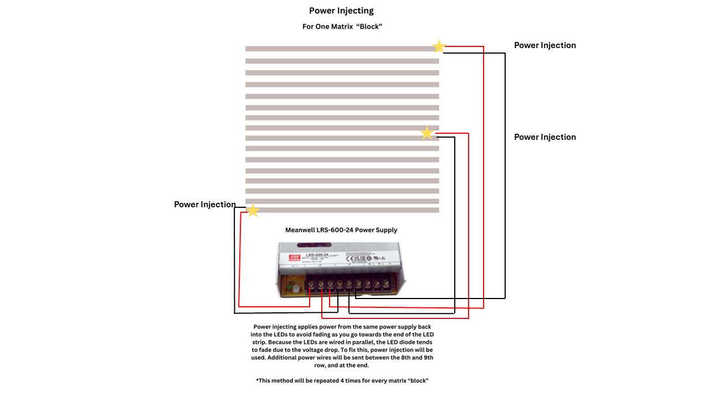
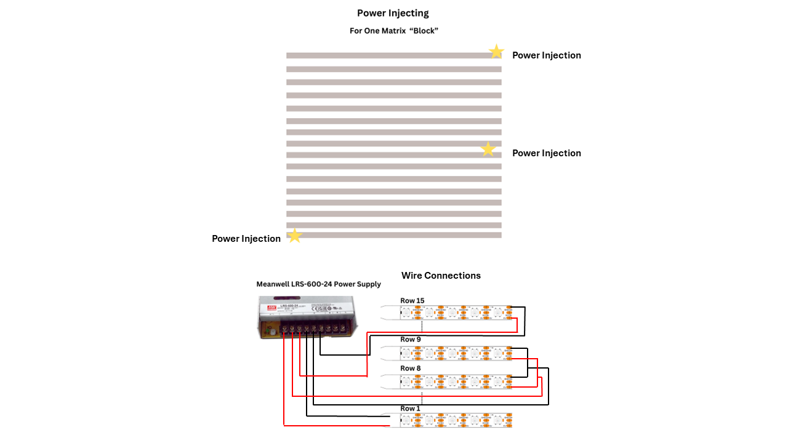
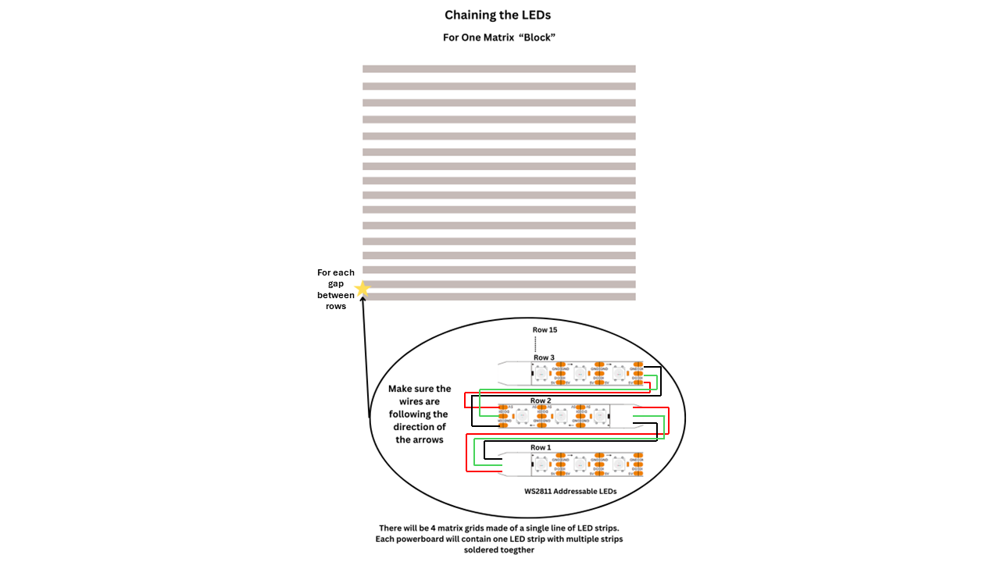
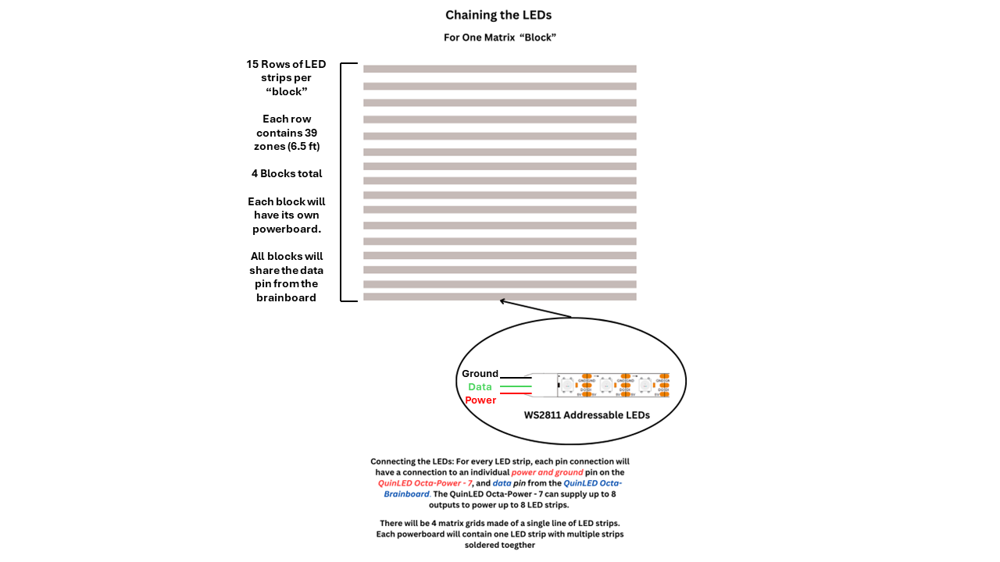

Group Role → 👑 Group-Leader, Schematics Creater and Software 👑
Lillian's Brief Description
"
Lillian Chan's Senior Design idea, GLSC connections/meetings, schematics, and group leadership ensured the project stayed organized and tasks were completed within the projected time period. The exhibit VP and Lead Exhibit Technology Developer from the GLSC (Great Lakes Science Center) allowed Lillian's idea to be used, sponsored, and permanently placed in the GLSC.
Lillian coordinated GLSC materials, costs, and important emails regarding the overall design.
The schematics are designed to Lillian's specified measurements to meet Tyler's hardware/electrical requirements, ensuring the design functions properly and can be maintained within the GLSC."





♦Computer Engineer, Lillian♦